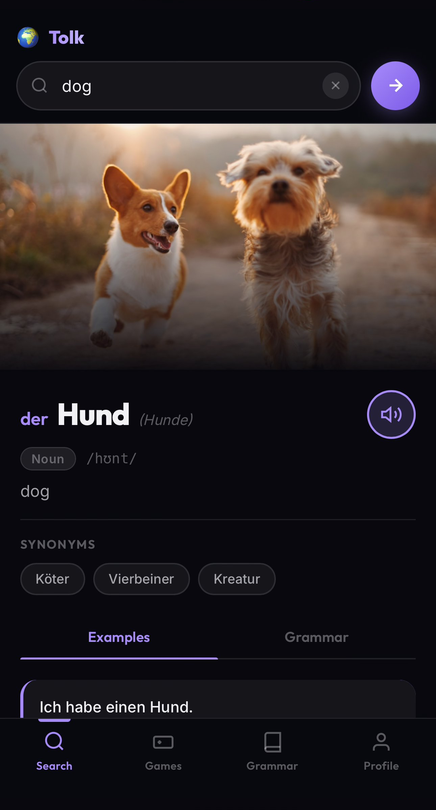
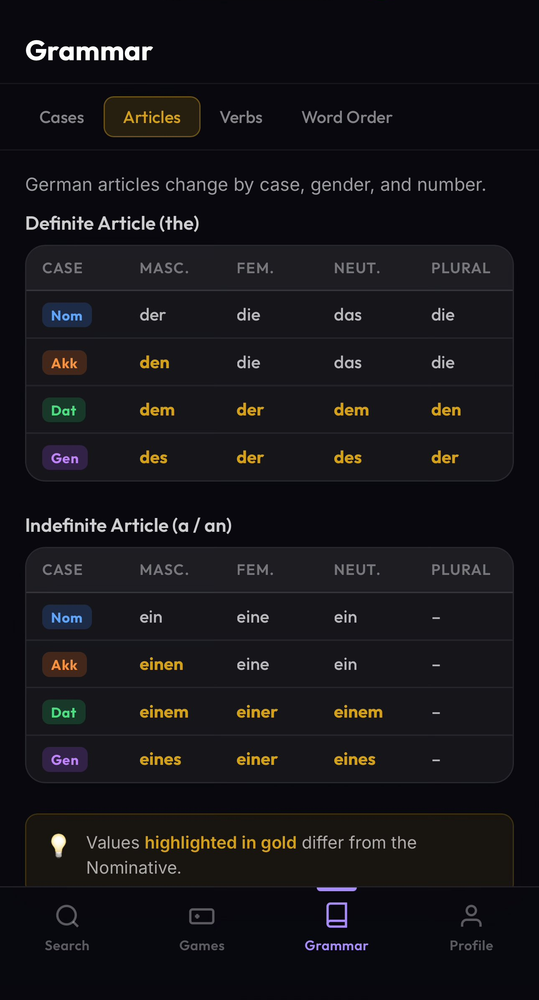

German learning · Web app
Tolk — German learning, built for daily use
A mobile-first German learning tool I designed and shipped because the existing apps didn't fit how I actually learn. Built with Antigravity, Groq, and the Unsplash API.
- Role
- Concept, UX, visual identity, content
- Year
- 2026
- Status
- Live